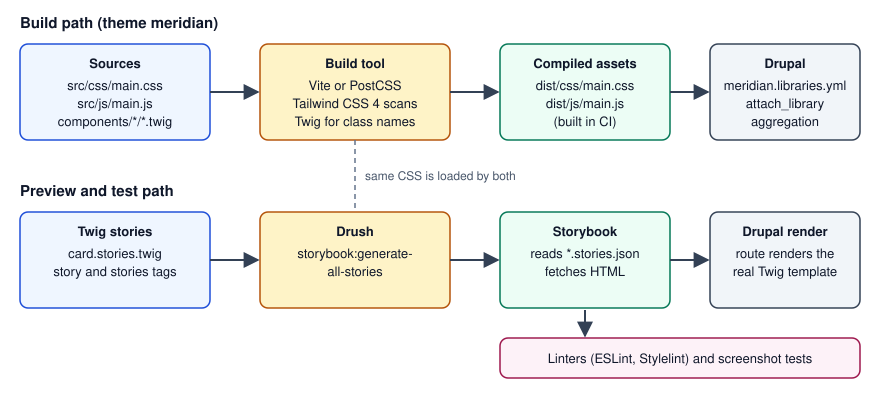

Drupal: Front-End Tooling for Themes
|
This content was generated with the assistance of AI and should be verified against the official documentation before being relied on in production. |
Drupal ships no build system for sites. A theme is a folder of Twig templates, YAML files, CSS and JavaScript, and Drupal serves exactly the files that its libraries list. Everything on this page (a bundler, a CSS framework, a component workshop, screenshot tests, linters) is therefore an ecosystem choice made by the team, not a Drupal requirement. This page explains how those tools fit around a Drupal theme: how to build CSS and JavaScript with Vite or PostCSS, how Tailwind CSS 4 is configured in CSS itself, how Storybook previews Twig components by letting Drupal render them (and why the Twig.js route has a limitation), how to catch visual regressions, and how to lint with Stylelint and ESLint using the configuration of Drupal core as a reference.
It was written against Drupal 11.4.x, with Drush 13 or 14 and PHP 8.3 or later, and checked against the official
documentation on 2026-10-30. The tool versions seen on that date were Vite 8.3, Tailwind CSS 4.3, Storybook 10.6,
the Storybook Drupal module 1.0.4, Stylelint 17, ESLint 10 and Playwright 1.64. Drupal 12.0.0 is scheduled for the week
of 2026-12-07 and the end of life of Drupal 10 for 2026-12-09, so both are described as upcoming; no new site should
start on Drupal 10. The running example is the Meridian Museum and its meridian theme, generated with Starterkit
(see Starterkit and sub-themes).
What Drupal gives you and what it does not
-
Drupal core compiles nothing for your theme.
THEME.libraries.ymlpoints at finished.cssand.jsfiles (see Libraries and assets). Whatever produces those files is up to you. -
A theme generated with Starterkit contains plain CSS in
css/, Twig templates and YAML, and nopackage.json, no bundler configuration and no linters. Adding them is a project decision. -
Drupal core has its own front-end toolchain, in
core/package.json, that is meant for people changing core. It builds core’s CSS from.pcss.csssources with PostCSS and lints core’s JavaScript and CSS. Runningyarninsidecore/of a site is not how a custom theme is built, and core files must never be edited in place because Composer replaces them on every update. -
Production servers do not need Node.js. The reliable pattern is to build the assets in a CI job (see Deployment and CI/CD) and ship the compiled files with the release.
Older material shows other arrangements. The Drupal documentation still carries a page, Creating automation tools for custom themes (Gulp.js), whose instructions target Gulp 3 and Node 10 and are marked as needing work. The book Modernizing Drupal 10 Theme Development (2023) builds Tailwind CSS 3 with webpack and previews components in Storybook with Twig.js. Those choices were sound in 2023, but Tailwind CSS 4 changed its configuration model, Vite has become the common bundler in the Drupal community, and Storybook can now use Drupal itself as the Twig renderer, as described below.

The toolbox at a glance
| Concern | Common choices | Notes |
|---|---|---|
Bundling JavaScript and CSS |
Vite, webpack, esbuild, Rollup, Gulp, plain npm scripts |
Vite has a documented backend-integration mode (manifest, dev server) that suits server-rendered HTML. |
CSS processing |
PostCSS (with |
Drupal core itself uses PostCSS. See Sass for the Sass route. |
CSS framework |
Tailwind CSS 4, Bootstrap, none |
See Tailwind CSS for the framework itself. |
Component preview |
Storybook, UI Patterns, a hand-made style guide |
Storybook plus the Storybook module renders real Twig through Drupal. |
Visual regression |
Chromatic, Playwright screenshots, BackstopJS |
Compare screenshots of stories or pages against stored baselines. |
Linting |
Stylelint, ESLint, Prettier, PHP_CodeSniffer for PHP and Twig-adjacent code |
Core publishes its Stylelint and ESLint configuration as a model. |
Node.js in a DDEV project
DDEV includes Node.js, npm and Yarn in the web container, runs them with ddev npm and ddev yarn, and lets you
choose the Node version with nodejs_version. A development server (Vite on port 5173, Storybook on 6006) must bind to
0.0.0.0 inside the container and its port must be exposed through web_extra_exposed_ports; all three port fields
should be set, because an omitted https_port defaults to 0 and the router then fails to start.
# .ddev/config.yaml (excerpt)
name: meridian
type: drupal
docroot: web
php_version: "8.3"
nodejs_version: "22"
web_extra_exposed_ports:
- name: vite
container_port: 5173
http_port: 5172
https_port: 5173
- name: storybook
container_port: 6006
http_port: 6007
https_port: 6006Drupal core’s own guidance for its toolchain is to use at least the latest Node.js LTS and Yarn through Corepack
(corepack enable). A custom theme can use npm or Yarn; whichever you choose, commit the lock file and install with
npm ci (or yarn install --immutable) in CI so that builds are reproducible.
A build pipeline for the meridian theme
The theme keeps sources and output apart. Sources live in src/, compiled files in dist/, and meridian.libraries.yml
references only dist/.
web/themes/custom/meridian/
meridian.info.yml
meridian.libraries.yml
package.json
vite.config.js
eslint.config.js
stylelint.config.mjs
src/
css/main.css
js/main.js
components/
card/card.component.yml
card/card.twig
card/card.stories.twig
templates/
dist/ (generated; ignored by Git, built in CI)
css/main.css
js/main.jsOption A: Vite
Vite runs a fast development server and produces optimized files for production. For server-rendered HTML its guide
describes the backend-integration mode: set build.manifest so that a .vite/manifest.json maps source files to output
files, and, during development, load @vite/client and the entry from the dev server. Drupal libraries need stable
file names, so the configuration below produces fixed names (dist/js/main.js, dist/css/main.css) and avoids the
manifest. Vite 8 names the entry option build.rolldownOptions; earlier majors call it build.rollupOptions.
{
"name": "meridian-theme",
"private": true,
"type": "module",
"scripts": {
"dev": "vite build --watch",
"build": "vite build",
"lint": "npm run lint:css && npm run lint:js",
"lint:css": "stylelint \"src/**/*.css\" \"components/**/*.css\"",
"lint:js": "eslint src components",
"storybook": "storybook dev -p 6006 --host 0.0.0.0 --no-open",
"build-storybook": "storybook build"
},
"devDependencies": {
"@tailwindcss/vite": "4.3.3",
"eslint": "10.13.0",
"globals": "17.0.0",
"prettier": "3.9.7",
"storybook": "10.6.5",
"@storybook/server-webpack5": "10.6.5",
"stylelint": "17.16.0",
"stylelint-config-standard": "40.0.0",
"tailwindcss": "4.3.3",
"vite": "8.3.5"
}
}// vite.config.js
import { defineConfig } from 'vite';
import tailwindcss from '@tailwindcss/vite';
export default defineConfig({
plugins: [tailwindcss()],
build: {
outDir: 'dist',
emptyOutDir: true,
rolldownOptions: {
input: 'src/js/main.js',
output: {
entryFileNames: 'js/[name].js',
assetFileNames: 'css/[name][extname]',
},
},
},
});// src/js/main.js: Vite follows this import and emits dist/css/main.css
import '../css/main.css';
(function (Drupal, once) {
Drupal.behaviors.meridianNav = {
attach(context) {
once('meridian-nav', '[data-meridian-nav]', context).forEach((el) => {
el.classList.add('is-ready');
});
},
};
})(Drupal, once);# meridian.libraries.yml
global:
version: 1.x
css:
theme:
dist/css/main.css: {}
js:
dist/js/main.js: {}
dependencies:
- core/drupal
- core/onceSource: Vite: Backend integration
After the first build, check that dist/ contains the two files named in the library; the file names Vite gives to
CSS extracted from a JavaScript entry depend on the Vite major version and the assetFileNames setting. The package
versions above are pinned exactly on purpose; pin the ones your project actually uses and update them with Dependabot or
Renovate.
Option B: PostCSS and the Tailwind command line
When no JavaScript bundling is needed, a CSS-only pipeline is smaller. Tailwind CSS 4 ships its PostCSS plugin in
@tailwindcss/postcss and a command line in @tailwindcss/cli; imports and vendor prefixing are handled by Tailwind,
so postcss-import and autoprefixer are no longer needed with it.
// postcss.config.mjs
export default {
plugins: {
'@tailwindcss/postcss': {},
},
};# one-off build, and a watcher for development
npx @tailwindcss/cli -i src/css/main.css -o dist/css/main.css --minify
npx @tailwindcss/cli -i src/css/main.css -o dist/css/main.css --watchDrupal core’s own build is an example of a plain PostCSS pipeline: sources are named *.pcss.css, yarn run build:css
compiles them to .css, and yarn run watch:css recompiles on save. The .es6.js convention belongs to Drupal 9;
since Drupal 10 JavaScript files can contain modern syntax and are not transpiled by core.
Choosing between the options
-
Pick Vite when the theme has real JavaScript (modules, imports, TypeScript) or when Storybook will share its configuration.
-
Pick the Tailwind CLI or plain PostCSS when the theme only needs CSS compiled.
-
Keep dev servers and watchers out of production:
vite build --watchwrites files that Drupal reads from disk, so no Drupal setting changes between development and production except for aggregation and cache settings described in Libraries and assets.
Tailwind CSS 4’s CSS-first configuration
Tailwind CSS 3 was configured in tailwind.config.js with a content array and loaded with three @tailwind directives.
Tailwind CSS 4 moves configuration into the stylesheet. The single line @import "tailwindcss"; loads the framework,
@theme declares design tokens as CSS custom properties, and @source tells the compiler where to look for class names.
JavaScript configuration files are not detected automatically any more; an old file can still be loaded explicitly with
@config "../../tailwind.config.js"; while a project migrates (the upgrade tool is npx @tailwindcss/upgrade, which
requires Node.js 20 or later). Tailwind CSS 4.0 targets Safari 16.4, Chrome 111 and Firefox 128 or newer, because it
relies on modern CSS such as @property and color-mix().
/* src/css/main.css */
@import "tailwindcss";
/* Twig templates are plain text to Tailwind; list every place that contains class names. */
@source "../../templates";
@source "../../components";
@source "../../../../modules/custom/meridian_collection/templates";
@theme {
--font-display: "Fraunces", "Georgia", serif;
--color-meridian-ink: oklch(0.27 0.04 255);
--color-meridian-brass: oklch(0.72 0.12 75);
--breakpoint-3xl: 120rem;
}
/* Classes assembled in Twig from variables cannot be detected, so force them. */
@source inline("{hover:,}bg-meridian-{ink,brass}");Source: Tailwind CSS: Upgrade guide
How source detection behaves matters for a Drupal site:
-
Tailwind scans every file under the project directory except files ignored by
.gitignore,node_modules, binary files, CSS files and lock files. Because the theme folder usually sits inside a Composer project, a build started from the theme directory seestemplates/andcomponents/without configuration, but anything outside it (a module’s templates, or a Canvas code component) needs an explicit@source. -
Paths that are listed in
.gitignoreare skipped. Adist/orweb/modules/contrib/entry in.gitignoreis therefore not scanned unless it is registered with@source. -
@import "tailwindcss" source(none);disables automatic detection and lists every source explicitly, and@source not "../components/legacy";excludes a path. -
A class name must appear as a complete string.
bg-{{ colour }}-500in Twig is never detected; write the whole class in a map, or add it with@source inline().
Tailwind’s utilities are emitted inside CSS cascade layers. Styles that are not in any layer win over layered styles
whatever their order, so unlayered CSS from core or a module can override a Tailwind utility on the same element. When a
utility seems to be ignored, inspect the cascade in the browser developer tools before raising specificity; the
usual cure is to put the competing theme CSS in a layer too, or to attach the Tailwind library so that it loads after the
other stylesheets (a weight in the library definition, or the theme group).
In Twig, utility classes are applied through the Attribute object, so they can be merged with classes added by Drupal or modules.
{# components/card/card.twig #}
{% set classes = ['card', 'rounded-lg', 'bg-white', 'p-4', 'shadow-sm'] %}
<article {{ attributes.addClass(classes) }}>
<h3 class="font-display text-meridian-ink text-xl">{{ title }}</h3>
<div class="mt-2">{{ body }}</div>
</article>Components, assets and Single Directory Components
A Single Directory Component (see Single Directory Components) keeps its Twig, YAML, CSS and JavaScript together, and Drupal attaches a component’s own stylesheet and script automatically when the component is rendered. Two consequences follow for tooling:
-
If the build writes one global stylesheet, components do not need their own CSS files, and the global library is attached to every page. This suits Tailwind, where utility classes in the component’s Twig are all that is needed.
-
If components carry CSS next to their template, the build must write the compiled file into the component directory with the name Drupal expects, which is why many projects keep component CSS hand-written and use the bundler only for the global entry.
Whichever route is chosen, the browser sees only compiled files, and anything under src/ that is not listed in a
library is never served. The same rule applies to a Canvas code component (see
Canvas): Canvas builds its own bundle, so global Tailwind utilities
are available only when the page loads the global library.
Component previews with Storybook
Storybook is a workshop that renders each component state ("story") in isolation, with controls, documentation and accessibility checks. Twig is not JavaScript, so the central question for Drupal is who renders the Twig. There are two answers.
Server-rendered Twig through the Storybook module
The Storybook Drupal module (drupal/storybook, 1.0.4 released on 2026-07-07, compatible with Drupal 9, 10 and 11)
lets Drupal render the components. It provides two Twig tags, stories and story, so stories are written in Twig,
in files named NAME.stories.twig; it works with or without Single Directory Components. The flow is:
-
The Drush command
drush storybook:generate-all-storiescompiles every*.stories.twigfile into a*.stories.jsonfile. -
Storybook, configured with the server framework, loads those JSON files. Each story records a server URL that points at a render route of the Drupal site, and its
argsbecome Twig variables. -
When a story is shown, Storybook asks Drupal to render it; Drupal runs the real Twig templates, preprocess functions, filters and libraries and returns HTML, which Storybook displays.
Installation, following the module’s README:
ddev composer require --dev drupal/storybook:^1.0
ddev drush en storybook -y
# in the theme directory
ddev exec "cd web/themes/custom/meridian && npm install"
ddev exec "cd web/themes/custom/meridian && npx storybook@10.6.5 init --type server"# web/sites/development.services.yml (excerpt; development only)
parameters:
storybook.development: true
twig.config:
debug: true
cache: false
# Remember to disable development mode in production.
services:
cors.config:
enabled: true
allowedHeaders: ['*']
allowedMethods: ['*']
allowedOrigins: ['https://meridian.ddev.site:6006']
exposedHeaders: false
maxAge: false
supportsCredentials: true// .storybook/main.js
export default {
stories: ['../components/**/*.stories.json'],
addons: [],
framework: {
name: '@storybook/server-webpack5',
options: {},
},
};{# components/card/card.stories.twig #}
{% stories card with { title: 'Meridian/Components/Card' } %}
{% story default with { name: 'Default', args: { title: 'Bronze astrolabe', body: 'On display in the Navigation gallery.' } } %}
{% embed 'meridian:card' with { title, body } %}{% endembed %}
{% endstory %}
{% story long_title with { name: 'Long title', args: { title: 'A very long object title that wraps over several lines in the card', body: 'Accession 1987.14.3' } } %}
{% embed 'meridian:card' with { title, body } %}{% endembed %}
{% endstory %}
{% endstories %}Source: Storybook module project page and its README
Operational details from the README:
-
Storybook cannot read Twig, so stories must be regenerated whenever a
.stories.twigfile changes. The README suggests running the command underwatch. The--urioption overrides the site address used in the generated server URL and--omit-server-urlleaves it out, which is useful for a static deployment. -
Twig debug must be on and the Twig cache and the render cache bins must be disabled while developing, otherwise stale markup is shown.
-
The user that Storybook acts as needs the permission "Render Storybook stories". The README has this granted to anonymous users on development sites only.
-
If components do not render, check whether requests to Drupal use
httpwhere the site expectshttps; the README suggests fixing the DDEV certificate configuration or using a Drush alias with anhttpsURI. -
The earlier
@lullabot/storybook-drupal-addonis no longer needed; a project migrating from the CL Server approach removes it from the Storybook configuration.
Security: this setup exposes a render route that outputs site markup to anyone allowed to call it, relaxes CORS and turns
on Twig debugging. Keep storybook.development false and the permission revoked in production, restrict
allowedOrigins to the Storybook origin rather than *, never export the development configuration, and keep the
Storybook dev server off public networks. See Security hardening.
Twig rendered in JavaScript, and its limitation
The other approach compiles Twig to JavaScript so Storybook renders it in the browser without Drupal. The Community
plugin vite-plugin-twig-drupal (built on Twig.js) turns Drupal-flavoured .twig files into functions that stories
import like modules, and supports Drupal-specific functions such as create_attributes; custom functions and filters
are registered through its functions option. It needs no running site, which makes it attractive for quick, isolated
design work.
The limitation is fidelity. Twig.js is a JavaScript re-implementation, not Drupal’s Twig environment. Drupal’s own
filters, functions and extensions (translation, render, attach_library, |without, the Attribute object, SDC’s
include of namespace:component identifiers and slot handling) are not there unless the plugin or the project
re-implements each one, and rendering that depends on preprocess functions or services cannot be reproduced at all.
The plugin’s own README therefore points to a Drupal-rendered component server when a project uses Single Directory
Components or UI Patterns, and notes that nesting a React component inside a Twig component does not work. In
practice: use the Storybook module when components must look and behave as they do on the site; use a Twig.js plugin
only for self-contained templates, and treat its output as an approximation.
The 2023 book Modernizing Drupal 10 Theme Development previews components with Twig.js. That remains possible, but since the Storybook module exists it is no longer the default recommendation for components that are part of the Drupal render pipeline.
Source: vite-plugin-twig-drupal README
Drupal’s documentation also keeps a list of modules and tools that extend Single Directory Components, which is the place to look for further Storybook-related and component-library projects: Modules and Tools that extend Single-Directory Components.
Visual regression testing
A visual regression test renders a component or page, takes a screenshot and compares it with a stored baseline; a difference above a tolerance fails the build. For a Drupal theme there are two natural subjects: Storybook stories (small, deterministic, no content dependencies) and a few key pages of a fixture site. The general technique, tools and pitfalls are covered in Visual regression testing; the points below are Drupal-specific.
-
Storybook with Chromatic: Storybook’s documentation recommends the Chromatic cloud service and its
@chromatic-com/storybookaddon, which snapshots every story and shows pixel differences for review. It is a commercial service with a free tier, which is an ecosystem decision, not a Drupal one. -
Playwright screenshots:
expect(page).toHaveScreenshot()stores a reference image on the first run, compares on later runs withthresholdandmaxDiffPixelstolerances, and names files per browser and platform, so baselines must be created on the same platform that CI uses.npx playwright test --update-snapshotsaccepts intended changes. -
BackstopJS and similar tools do the same against a list of URLs.
// tests/visual/card.spec.js: screenshots every Card story served by a running Storybook
import { test, expect } from '@playwright/test';
const stories = ['meridian-components-card--default', 'meridian-components-card--long-title'];
for (const id of stories) {
test(`card story ${id}`, async ({ page }) => {
await page.goto(`http://localhost:6006/iframe.html?id=${id}&viewMode=story`);
await page.waitForLoadState('networkidle');
await expect(page.locator('#storybook-root')).toHaveScreenshot(`${id}.png`, {
maxDiffPixels: 50,
animations: 'disabled',
});
});
}Source: Playwright: Visual comparisons
Common causes of flaky baselines in Drupal projects are web fonts that load from a development server with CORS errors,
rotating content (dates, "On display now" lists), and differing operating systems. Use fixed story arguments, local
fonts, and the same container image for baseline creation and CI. The story identifier in the URL is derived from the
title and story name (lowercased and hyphenated), so renaming a story renames its baseline.
Linting
Drupal core lints its own front-end code and publishes the configuration, so a theme can follow the same conventions.
The tools and versions that the development branch of core declared on the check date were ESLint 8.57, Stylelint 16,
PostCSS 8 and Prettier 3, with Node.js 20 or later and Yarn 4.1.1 or later in engines.
-
JavaScript:
core/.eslintrc.jsonextendsairbnb-base,plugin:prettier/recommendedandplugin:yml/recommended, setsecmaVersionto 2020 and declares Drupal globals (Drupal,drupalSettings,drupalTranslations,jQuery,htmxand others). The scripts areyarn lint:core-jsandyarn lint:core-js-passing; the latter uses.eslintrc.passing.json, a stricter ruleset, and--fixrepairs some formatting errors. -
CSS:
core/.stylelintrc.jsonextendsstylelint-config-standardandstylelint-prettier/recommended, addsstylelint-orderand a number of rules turned off or tuned for Drupal’s CSS coding standards, and is run byyarn lint:css. -
Formatting: Prettier, through
yarn prettier.
Core still uses the legacy .eslintrc format with ESLint 8. ESLint 9 made the flat eslint.config.js format the
default and a current ESLint release no longer reads .eslintrc files, so a new theme should start with a flat
configuration and carry the Drupal globals over. Core’s rules are a convention to follow, not a requirement for a
custom theme; the official coding standards pages (which moved to project.pages.drupalcode.org/coding_standards) are
the reference for style, and the same pages cover PHP, covered in
Coding standards and static analysis.
// eslint.config.js (flat config)
import js from '@eslint/js';
import globals from 'globals';
export default [
{ ignores: ['dist/**', 'node_modules/**'] },
js.configs.recommended,
{
files: ['src/**/*.js', 'components/**/*.js'],
languageOptions: {
ecmaVersion: 2022,
sourceType: 'script',
globals: {
...globals.browser,
Drupal: 'readonly',
drupalSettings: 'readonly',
once: 'readonly',
},
},
rules: {
'no-unused-vars': ['error', { args: 'after-used' }],
eqeqeq: 'error',
},
},
];// stylelint.config.mjs
export default {
extends: ['stylelint-config-standard'],
rules: {
// Tailwind CSS 4 at-rules are valid even though they are not in the CSS standard.
'at-rule-no-unknown': [
true,
{ ignoreAtRules: ['theme', 'source', 'utility', 'custom-variant', 'variant', 'plugin', 'config', 'apply', 'reference'] },
],
'import-notation': 'string',
'custom-property-pattern': '^[a-z][-_a-z0-9]*$',
},
};Source: Stylelint: Configuring and ESLint: Configuration files
Practical notes:
-
Lint source files, not
dist/, and put both linters in the CI job that builds the theme, before the build step, so a style violation fails fast. -
Without the
at-rule-no-unknownexception,@theme,@sourceand@utilityare reported as errors, because Stylelint does not know Tailwind’s at-rules. -
Keep
oncein the global list; theonce()function is provided by thecore/oncelibrary, which the theme library lists as a dependency in the example above. -
Twig has no widely adopted linter in this tool set; template quality is enforced by Drupal’s PHP tooling, by rendering tests, and by the visual regression suite.
A CI job for the theme
# .github/workflows/theme.yml
name: theme
on: [pull_request]
jobs:
build:
runs-on: ubuntu-24.04
defaults:
run:
working-directory: web/themes/custom/meridian
steps:
- uses: actions/checkout@v4
- uses: actions/setup-node@v4
with:
node-version: 22
cache: npm
cache-dependency-path: web/themes/custom/meridian/package-lock.json
- run: npm ci
- run: npm run lint
- run: npm run build
- uses: actions/upload-artifact@v4
with:
name: meridian-dist
path: web/themes/custom/meridian/distThe compiled dist/ directory is then copied into the release artifact. See
Deployment and CI/CD for how the release is assembled and
Project layout and local development for where themes live.
Common errors and pitfalls
-
Styles do not appear on the site. The library lists
dist/css/main.cssbut the build has not run, or the output name differs; check the file, clear caches and, if aggregation is on, rebuild the aggregates. -
Utilities missing. The template that uses them is outside the scanned paths, is git-ignored, or builds the class name from a variable.
-
Everything reset. Tailwind’s base layer (preflight) removes browser defaults and may change the look of core and contrib markup, such as admin-facing forms rendered on the front end. Import only the layers needed, or scope the styles to the theme.
-
Dev server pages blank behind DDEV. The dev server listens on
localhostonly; bind it to0.0.0.0and expose the port, as shown above. -
Storybook shows a CORS or mixed-content error. The Drupal
cors.configdoes not list the Storybook origin, or the generated server URL useshttpwhere the site useshttps. -
Committing
node_modulesordist. Ignore both and build in CI; a Composer-managed site otherwise carries large, unreviewable diffs. -
Supply-chain exposure. Front-end dependencies run code on developer machines and in CI. Use lock files and
npm ci, review updates, and never expose deployment secrets to the build job. -
Book instructions fail. A
tailwind.config.jswith acontentarray and@tailwind base;directives are Tailwind 3; with Tailwind 4 they are replaced by@import "tailwindcss";,@themeand@source.